7. Coarse Mesh Finite Difference Acceleration¶
While MOC offers many benefits including treatment of complex geometries and amenability to parallelization, it suffers from slow convergence which necessitates the use of acceleration methods. Numerous acceleration schemes have been proposed for MOC such as CMFD [1], coarse mesh rebalance (CMR) [2, 3], and low order transport operator acceleration [4] with CMFD being the most widely adopted due to its simplicity and acceleration performance. OpenMOC uses the CMFD nonlinear diffusion acceleration (NDA) scheme to reduce the number of iterations required to converge the neutron transport problem. Acceleration schemes, such as NDA, are necessary when solving full-core problems which require thousands of power iterations due to a high dominance ratio. CMFD was first proposed by Smith [1] and has been widely used in accelerating neutron diffusion and transport problems for many years [5, 6]. In particular, it has been shown that CMFD acceleration gives >100x speedups on large LWR problems [7].
CMFD acceleration functions by using the solution of a coarse mesh diffusion problem to accelerate the convergence of a fine mesh transport problem. It is implemented by overlaying a 2D rectangular mesh over a structured or unstructured FSR mesh. Figure 1 gives an illustration of the FSR mesh layout and coarse mesh layout used for solving a 17 x 17 PWR assembly problem.

Figure 1: Flat source region (left) and CMFD (right) mesh layout for a 17 x 17 PWR assembly where each colored cell denotes a different region.
To derive the CMFD equations, we begin with the 2D, steady state multi-group neutron diffusion equation:
(1)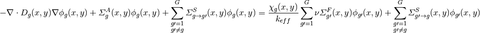
Where the terms in equation (1) are defined as:
| Variable | Description | Variable | Description |
|---|---|---|---|
 |
Diffusion coefficient |  |
Scalar flux on coarse mesh |
 |
Coarse mesh absorption XS |  |
Fission spectrum |
 |
Coarse mesh scattering XS |  |
Neutron multiplication factor |
| 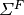 | Coarse mesh fission XS |  |
Neutrons per fission |
| 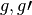 | Energy group index |  |
Position variable |
7.1. Cross Section Generation¶
The cross sections for the CMFD diffusion equation are generated by energy-condensation and area-averaging of the cross sections from the fine mesh as shown in equation (2). The energy group structure of the CMFD diffusion equations does not necessarily have to be the same as the energy group structure used in MOC. For example, Figure 2 shows the various ways to formulate the CMFD group structure to accelerate a three group MOC problem. When the CMFD group structure differs from the MOC group structure, we rename it coarse group coarse mesh finite difference (CGCMFD).

Figure 2: Schemes for condensing the energy group structure in forming the CMFD diffusion equations.
Cross section condensation equations
(2)
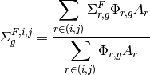

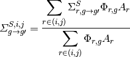
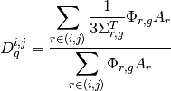


Where  and
and  denote the mesh cell indices in the x and y directions, respectively. By condensing the cross sections in this way, we require reaction rates to be conserved. In our derivation of MOC we have assumed isotropic scattering in the lab system which makes the total cross section,
denote the mesh cell indices in the x and y directions, respectively. By condensing the cross sections in this way, we require reaction rates to be conserved. In our derivation of MOC we have assumed isotropic scattering in the lab system which makes the total cross section,  , equal to the transport cross section,
, equal to the transport cross section,  . This allows us to approximate the diffusion coefficient on the fine mesh as
. This allows us to approximate the diffusion coefficient on the fine mesh as  instead of its’ defined value of 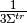. Approximating the diffusion coefficient in this manner works well for optically thin regions, but induces significant error where the width of a region is much greater than the neutron mean free path (i.e. the region is optically thick). Modifications to the diffusion coefficient for optically thick regions will be discussed in Section 7.1.
instead of its’ defined value of 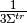. Approximating the diffusion coefficient in this manner works well for optically thin regions, but induces significant error where the width of a region is much greater than the neutron mean free path (i.e. the region is optically thick). Modifications to the diffusion coefficient for optically thick regions will be discussed in Section 7.1.
7.2. Applying the Finite Difference Approximation¶
The diffusion operator in (1) can be expanded to yield:
(3)![- \frac{\partial}{\partial x} D_g (x,y) \frac{\partial}{\partial x} \phi_g (x,y) - \frac{\partial}{\partial y} D_g (x,y) \frac{\partial}{\partial y} \phi_g (x,y) + \varSigma^A_{g} \phi_g (x,y) + \sum_{\substack{g \prime = 1 \\ g \prime \neq g}}^G \varSigma^S_{s,g \rightarrow g \prime} (x,y) \phi_g (x,y) = \frac{\chi_g (x,y)}{k_{eff}} \sum_{g \prime = 1}^G \nu \varSigma^F_{g \prime} (x,y) \phi_{g \prime} (x,y) + \sum_{\substack{g \prime = 1 \\ g \prime \neq g}}^G \varSigma^S_{g \prime \rightarrow g} (x,y) \phi_{g \prime} (x,y)](../_images/math/4f9304083261bd0bf08d14220d9af6034a7240df.png)
We can integrate (3) over a mesh cell to get the neutron balance in that cell. Performing the integration on cell  and simplifying we get:
and simplifying we get:
![- \int_{i-\frac{1}{2}}^{i+\frac{1}{2}} \int_{j-\frac{1}{2}}^{j+\frac{1}{2}} \frac{\partial}{\partial x} D_g^{i,j} \frac{\partial}{\partial x} \phi_g^{i,j} dx dy - \int_{i-\frac{1}{2}}^{i+\frac{1}{2}} \int_{j-\frac{1}{2}}^{j+\frac{1}{2}} \frac{\partial}{\partial y} D_g^{i,j} \frac{\partial}{\partial y} \phi_g^{i,j} dx dy + \Delta x^{i,j} \Delta y^{i,j} \varSigma_{g}^{A,i,j} \phi_g^{i,j} + \Delta x^{i,j} \Delta y^{i,j} \sum_{\substack{g \prime = 1 \\ g \prime \neq g}}^G \varSigma_{g \rightarrow g \prime}^{S,i,j} \phi_g^{i,j} = \Delta x^{i,j} \Delta y^{i,j} \frac{\chi_g^{i,j}}{k_{eff}} \sum_{g \prime = 1}^G \nu \varSigma_{g \prime}^{F,i,j} \phi_{g \prime}^{i,j} + \Delta x^{i,j} \Delta y^{i,j} \sum_{\substack{g \prime = 1 \\ g \prime \neq g}}^G \varSigma_{g \prime \rightarrow g}^{S,i,j} \phi_{g \prime}^{i,j}](../_images/math/fbf8213b47fa3d14553fd1429c45f266954e246e.png)
Where 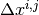 and  denote the width and height of cell (i,j), respectively. Using the Divergence Theorem, we can reduce the volume integrals of the streaming terms to surface integrals over the bounding surfaces of a cell. The surface integrals will then represent currents across the surfaces of a cell. Using streaming in the x-direction as an example, we can rewrite the volume integral of the streaming term in the x-direction as:
denote the width and height of cell (i,j), respectively. Using the Divergence Theorem, we can reduce the volume integrals of the streaming terms to surface integrals over the bounding surfaces of a cell. The surface integrals will then represent currents across the surfaces of a cell. Using streaming in the x-direction as an example, we can rewrite the volume integral of the streaming term in the x-direction as:

Where 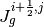 and 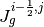 represent the surface-averaged net current across the right surface and across the left surface, respectively. An analogous equation can be written for streaming in the y direction.
As an example, we will now solve for the currents on the right surface of a cell with neighboring cell  as illustrated in Figure 3.
as illustrated in Figure 3.

Figure 3: Illustration of terms required to solve for streaming of neutrons from cell :math`(i,j)` to  in CMFD diffusion.
in CMFD diffusion.
To solve for the current at cell boundaries, we can perform finite difference approximations of the flux at a surface using the flux in the adjacent cells:
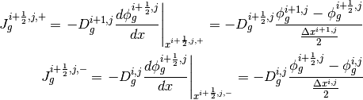
Where 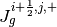 and 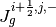 are the surface-averaged partial currents as approximated using a backward difference approximation from the cell at :math`(i,j)` and a forward difference approximation from the cell at , respectively. Equating these representations of the current we can solve for the flux at the surface:

The net current across the surface at  is then:
is then:
(4)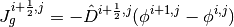
Where:
(5)
The neutron balance equation in a cell then becomes:
(6)![- \Delta y^{i,j} (J_g^{i+\frac{1}{2},j} - J_g^{i-\frac{1}{2},j}) - \Delta x^{i,j} (J_g^{i,j+\frac{1}{2}} - J_g^{i,j-\frac{1}{2}}) + \Delta x^{i,j} \Delta y^{i,j} \varSigma_{g}^{A,i,j} \phi_g^{i,j} + \Delta x^{i,j} \Delta y^{i,j} \sum_{\substack{g \prime = 1 \\ g \prime \neq g}}^G \varSigma_{g \rightarrow g \prime}^{S,i,j} \phi_g^{i,j} = \Delta x^{i,j} \Delta y^{i,j} \frac{\chi_g^{i,j}}{k_{eff}} \sum_{g \prime = 1}^G \nu \varSigma_{g \prime}^{F,i,j} \phi_{g \prime}^{i,j} + \Delta x^{i,j} \Delta y^{i,j} \sum_{\substack{g \prime = 1 \\ g \prime \neq g}}^G \varSigma_{g \prime \rightarrow g}^{S,i,j} \phi_{g \prime}^{i,j}](../_images/math/db20b731aca1e079e1eb55ab88889f469bc450fe.png)
Note that (4) is the algebraic net current based on the finite difference approximation being applied across the surface of two neighboring cells and not the actual net current in the MOC problem. The actual current from the MOC problem is computed by accumulating the current contribution from every segment that crosses a surface as will be shown in the Section 7.3.
7.3. Nonlinear Diffusion Correction Factors¶
In order to conserve neutron balance between the CMFD and MOC problems, the net currents across the coarse mesh cell surfaces must be equal. The surface diffusion coefficient expression in (5) results in a neutron current close to the actual current produced via the MOC solve, but there is no guarantee the currents will be equal. To compute the currents from MOC, the net currents are tallied during a transport sweep by summing the current contributions from each track that intersects a surface. For example, (7) represents the net current tally expression for surface  .
.
(7)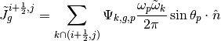
Where  is the unit surface normal and 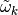 is the length of surface crossed by the track, as illustrated in Figure 4.
is the unit surface normal and 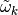 is the length of surface crossed by the track, as illustrated in Figure 4.

Figure 4: Angular flux from track  with energy group
with energy group  and polar angle
and polar angle  crossing surface
crossing surface  .
.
The length of surface crossed by the track is defined as:
(8)
Inserting (8) into (7) gives us:
(9)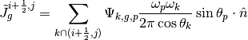
When we dot the track azimuthal angle with the unit surface normal of the track, we get  , which reduces (9) to:
, which reduces (9) to:
(10)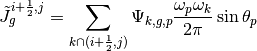
In order for the tallied net currents to equal the net current expression, a nonlinear diffusion coefficient term is added to (4):
(11)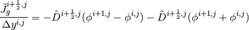
Where  is the nonlinear diffusion coefficient correction factor. Note that current expression computes the surface-averaged net current whereas the current tallied from MOC has not been averaged over the surface; therefore, in (11) the net current tallied from MOC has been divided by the length of the surface that is being crossed. is computed to make (11) valid for the tallied net surface current in MOC for the most recent transport sweep:
is the nonlinear diffusion coefficient correction factor. Note that current expression computes the surface-averaged net current whereas the current tallied from MOC has not been averaged over the surface; therefore, in (11) the net current tallied from MOC has been divided by the length of the surface that is being crossed. is computed to make (11) valid for the tallied net surface current in MOC for the most recent transport sweep:
(12)
7.4. Coarse Mesh Cell Corner Crossings¶
In the CMFD formalism introduced in the previous sections, we only treat transport to adjacent cells. However, MOC produces tracks that intersect mesh cell corners as shown in Figure 5. Corner crossings can result from either direct intersections where the track exactly intersects a corner or partial intersections where, when we consider a track has a finite width, the track sweeps across the corner.

Figure 5: Illustration of track crossing directly through the corner of a cell. The two main approximations for treating currents are denoted textbf{1} and textbf{2} and described below.
There are three main approximations to treat corner crossings:
- Consistently tallying the current from tracks through specific corners to only one of the surfaces. This approximation effectively moves the track far enough to one side such that the entire segment crosses a single surface.
- Split the current evenly among the surfaces. This approximation effectively splits the track into two partially-weighted segments and moves them to either side of the corner such that each new partially-weighted track only sweeps across one surface.
- A hybrid of approximations 1 and 2 where tracks that directly cross through a corner are treated with approximation 2 and tracks the directly cross through one surface but sweep through a corner are treated with approximation 1.
Note that tracks are not physically moved in any of these cases; rather, we make the assumption that they are moved when we tally the surface currents. In OpenMOC we have implemented approximation 3 where only tracks that directly intersect a corner are split among the surfaces. The partial weight given to each new track is half the original weight, regardless of track angle. While applying approximation 2 for all tracks would be more accurate, this would require additional computational costs when the tracks are generated, which can be a signficant portion of computational time for large geometries. The tallies for a track that crosses from cell to  for this approximation are given in (13).
for this approximation are given in (13).
(13)![\tilde{J}_g^{i + \frac{1}{2},j} = \frac{1}{2} \sum_{k \cap (i+\frac{1}{2},j+\frac{1}{2})} \Psi_{k,g,p} \frac{\omega_p \omega_k}{2 \pi} \sin \theta_p \\
\tilde{J}_g^{i,j + \frac{1}{2}} = \frac{1}{2} \sum_{k \cap (i+\frac{1}{2},j+\frac{1}{2})} \Psi_{k,g,p} \frac{\omega_p \omega_k}{2 \pi} \sin \theta_p \\
\tilde{J}_g^{i + 1, j + \frac{1}{2}} = \frac{1}{2} \sum_{k \cap (i+\frac{1}{2},j+\frac{1}{2})} \Psi_{k,g,p} \frac{\omega_p \omega_k}{2 \pi} \sin \theta_p \\
\tilde{J}_g^{i + \frac{1}{2}, j + 1} = \frac{1}{2} \sum_{k \cap (i+\frac{1}{2},j+\frac{1}{2})} \Psi_{k,g,p} \frac{\omega_p \omega_k}{2 \pi} \sin \theta_p](../_images/math/bb36cc8539bb3616dfd2ae3be875f79a48a649a4.png)
Where the summation is over the tracks that cross a specific corner denoted  . Note that the current is tallied on both the surfaces that bound cell and on surfaces
. Note that the current is tallied on both the surfaces that bound cell and on surfaces  and 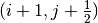 in order to preserve neutron balance between all four cells.
and 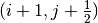 in order to preserve neutron balance between all four cells.
7.5. Optically Thick Regions¶
As shown in Figure 1 the CMFD mesh is often applied at the pin cell level with cells on the order of 1-2 cm. For some problems, such was BWR bundles with large water pins, the rectilinear pin cell lattice might not be maintained, requiring the CMFD mesh to be coarsened to the assembly level. By conserving reaction and leaking rates within cells, CMFD guarantees to preserve the area-averaged scalar fluxes and net surface currents from the MOC transport sweep if the CMFD equations can be converged. However, when the coarse mesh cell size becomes significantly larger than the neutron mean free path in that cell, the step characteristics no longer preserve the linear infinite medium solution to the transport equation [8]. Using the appoximation of the diffusion coefficient as 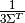 results is an unphysically large diffusion coefficient. Put in other words, the large diffusion coefficient suggests that the region is optically thin when it is actually optically thick. Due to this inconsistency in approximating the diffusion coefficient for optically thick cells, an “effective” diffusion coefficient was derived in [8]. The effective diffusion coefficient in the x-direction for cell can be expressed as:
(14)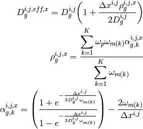
Note that the effective diffusion coefficient depends on the width of the cell and is therefore directional in a 2D mesh. Equation (14) can also be used to computed the effective diffusion coefficient in the y-direction, which will differ from the effective diffusion coefficient in the x-direction if the cell if the cell is not a square. As the size of the cell approaches zero and the optical thickness of the cell approaches the optically thin limit, the effective diffusion coefficient will approach the material diffusion coefficient. For simplicity, we continue to use the surface diffusion coefficient terms in the rest of this description without the “eff” superscript.
7.6. Matrix Equations¶
Going back to (6) and inserting the nonlinear diffusion coefficients from (?), the finite difference form of the diffusion equation over a mesh cell becomes:
![\Delta y^{i,j} (\hat{D}_g^{i-\frac{1}{2},j} [\phi_g^{i,j} - \phi_g^{i-1,j}] + \tilde{D}_g^{i-\frac{1}{2},j} [\phi_g^{i,j} + \phi_g^{i-1,j}]) - \Delta y^{i,j} (\hat{D}_g^{i+\frac{1}{2},j} [\phi_g^{i+1,j} - \phi_g^{i,j}] + \tilde{D}_g^{i+\frac{1}{2},j} [\phi_g^{i+1,j} - \phi_g^{i,j}]) + \Delta x^{i,j} (\hat{D}_g^{i,j-\frac{1}{2}} [\phi_g^{i,j} - \phi_g^{i,j-1}] + \tilde{D}_g^{i,j-\frac{1}{2}} [\phi_g^{i,j} + \phi_g^{i,j-1}]) \\
- \Delta x^{i,j} (\hat{D}_g^{i,j-\frac{1}{2}} [\phi_g^{i,j+1} - \phi_g^{i,j}] + \tilde{D}_g^{i,j-\frac{1}{2}} [\phi_g^{i,j+1} + \phi_g^{i,j}]) + \Delta x^{i,j} \Delta y^{i,j} \varSigma_{g}^{A,i,j} \phi_g^{i,j} + \Delta x^{i,j} \Delta y^{i,j} \sum_{\substack{g \prime = 1 \\ g \prime \neq g}}^G \varSigma_{g \rightarrow g \prime}^{S,i,j} \phi_g^{i,j} = \Delta x^{i,j} \Delta y^{i,j} \frac{\chi_g^{i,j}}{k_{eff}} \sum_{g \prime = 1}^G \nu \varSigma_{g \prime}^{F,i,j} \phi_{g \prime}^{i,j} + \Delta x^{i,j} \Delta y^{i,j} \sum_{\substack{g \prime = 1 \\ g \prime \neq g}}^G \varSigma_{g \prime \rightarrow g}^{S,i,j} \phi_{g \prime}^{i,j}](../_images/math/6db4135e6d17c21ddbb610ae911131d14ef1c589.png)
We can collapse the spatial dependence and write this equation in matrix form as:

Where:
| Variable | Description |
|---|---|
 |
NG x NG matrix with 4 diagonals for cell to cell transport |
| 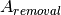 | NG x NG matrix with G diagonals for absorption and outscattering |
 |
NG x NG matrix with G diagonals for generation by fission |
 |
NG x NG matrix with G diagonals for inscattering |
|
NG length vector for the flux |
 |
The numbert of coarse mesh cells, I x J |
 |
The numbert of energy groups |
|
Multiplication factor |
We can combine the difference  matrices to get the more recognizable CMFD diffusion eigenvalue equation:
matrices to get the more recognizable CMFD diffusion eigenvalue equation:
(15)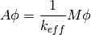
In Section 7.4 we discuss how this matrix equation will be solved and used to accelerate the solution of the MOC solve.
7.7. CMFD Accelerated MOC Algorithm¶
The general flowchart for CMFD accelerated MOC in Figure 6.

Figure 6: The solution procedure for CMFD accelerated MOC.
CMFD acceleration is implemented in OpenMOC by overlaying a Cartesian coarse mesh on top of the unstructured flat source region mesh as shown in Figure 1. During a MOC transport sweep, OpenMOC tallies the net currents across the surfaces of each mesh cell. The transport sweep algorithm then becomes Figure 7.

Figure 7: The solution procedure for CMFD accelerated MOC.
At the end of the transport sweep, OpenMOC proceeds to condense the cross sections, flux, and diffusion coefficients according to (2). The diffusion coefficient coupling terms that link neighboring cells,  and , are then computed using (5) and (12). There are two subtle points in computing the nonlinear coupling coefficients . First, the condition 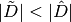 must be met in order to guarantee the diagonal dominance in the destruction matrix, A. If this condition is not met, the surface diffusion coefficients will be re-computed such that they are equal in magnitude and satisfy (11). Secondly, under-relaxation of the nonlinear correction factor is used to accelerate and maintain stability of the eigenvalue convergence rate for large, heterogeneous geometries. OpenMOC does so by applying a fixed damping factor on the terms. The nonlinear diffusion coefficients are initially set to zero and modified according to (16).
and , are then computed using (5) and (12). There are two subtle points in computing the nonlinear coupling coefficients . First, the condition 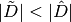 must be met in order to guarantee the diagonal dominance in the destruction matrix, A. If this condition is not met, the surface diffusion coefficients will be re-computed such that they are equal in magnitude and satisfy (11). Secondly, under-relaxation of the nonlinear correction factor is used to accelerate and maintain stability of the eigenvalue convergence rate for large, heterogeneous geometries. OpenMOC does so by applying a fixed damping factor on the terms. The nonlinear diffusion coefficients are initially set to zero and modified according to (16).
(16)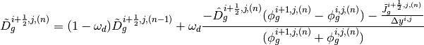
Where 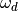 is the under-relaxation dampening factor and  is the transport sweep iteration. Within each CMFD iteration, OpenMOC uses power iterations to solve the generalized non-Hermitian eigenvalue problem as shown in Figure 8. In each power iteration, the linear system is solved using a parallel (red-black) implementation of the successive over-relaxation method as shown in Figure 9. Upon convergence of the CMFD diffusion problem, OpenMOC performs prolongation by multiplying each FSR’s scalar flux by the ratio of the converged coarse mesh scalar flux to the initial coarse mesh scalar flux in the acceleration step:
is the transport sweep iteration. Within each CMFD iteration, OpenMOC uses power iterations to solve the generalized non-Hermitian eigenvalue problem as shown in Figure 8. In each power iteration, the linear system is solved using a parallel (red-black) implementation of the successive over-relaxation method as shown in Figure 9. Upon convergence of the CMFD diffusion problem, OpenMOC performs prolongation by multiplying each FSR’s scalar flux by the ratio of the converged coarse mesh scalar flux to the initial coarse mesh scalar flux in the acceleration step:
(17)
where  is the coarse mesh scalar flux computed using equation (2) and
is the coarse mesh scalar flux computed using equation (2) and  is the converged CMFD coarse mesh scalar flux.
is the converged CMFD coarse mesh scalar flux.

Figure 8: Power Iteration Outer Loop Source Iteration.
Instead of splitting the corner currents during the MOC transport sweep, OpenMOC tallies the corner currents as independent surfaces and then splits the corner currents between their neighboring surfaces in step 2 of Figure 8. With the corner currents accounted for, the surface diffusion coefficients are then computed just prior to the power method eigenvalue solve. The first step in the power method inner loop iteration is to solve a linear fixed fission source problem. The SOR method is used to solve the linear system with the SOR relaxation factor denoted as 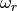 as described by Figure 9. While more computationally efficient methods exist for solving generalized non-Hermitian eigenvalue problems like Krylov-subspace methods, we chose the power method for its simplicity and stability. Additionally, more computationally efficient methods exist for solving the linear system like Generalized Minimum Residual (GMRES) and stabilized biconjugate gradient (BiCGStab), but these methods are conceptually more challenging and difficult to implement. As we will shown in the timing results in Chapter 5, the power method with SOR performs sufficiently well for the problems we are studying.

Figure 9: Successive over-relaxation numerical flux inversion.
7.8. References¶
| [1] | (1, 2)
|
| [2] |
|
| [3] |
|
| [4] |
|
| [5] |
|
| [6] |
|
| [7] |
|
| [8] | (1, 2)
|